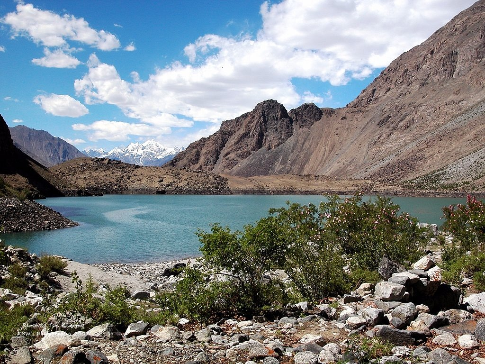

khaplu is a beautiful place and it is also known as the city of waterfalls because of its many waterfalls. It is a popular tourist destination for nature lovers and adventure seekers. The town is surrounded by stunning mountains and lush green valleys, making it a perfect spot for hiking and trekking. Additionally, khaplu has a rich cultural heritage, with traditional architecture and local customs that attract visitors from around the world. Overall, khaplu is a must-visit destination for those looking to experience the natural beauty and cultural richness of northern Pakistan.
